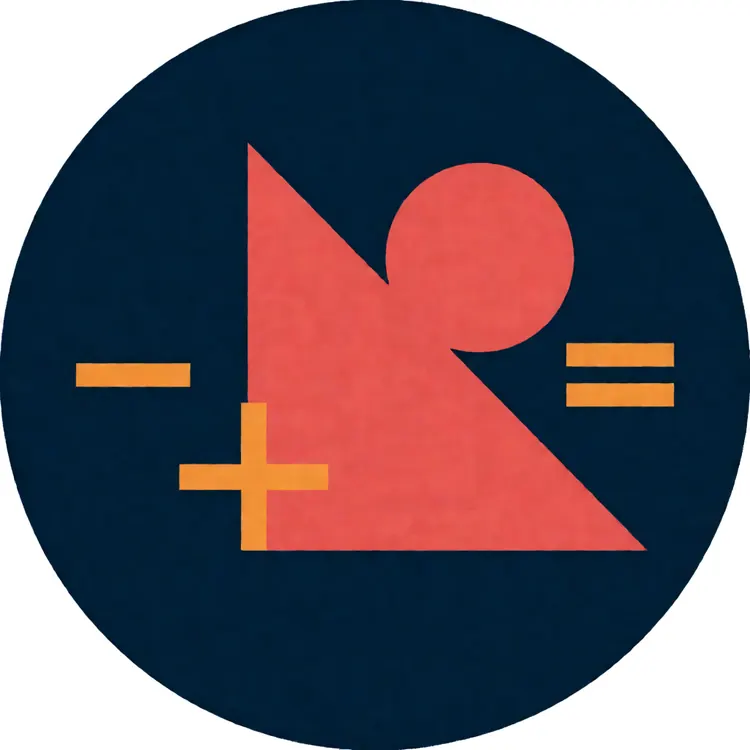

距 2026 年 12 月联考
全国硕士研究生入学统一考试 · 管理类综合能力
--
天
--
时
--
分
--
秒
⚡ 今日挑战 数学
📊 各科目进度

数学基础
75分 · 25题 · 代数/几何/数据分析
逻辑推理
60分 · 30题 · 形式/分析/论证
写作
65分 · 论证有效性30分+论说文35分
英语二
100分 · 阅读/翻译/写作
🏆 成就解锁
📈 学习数据
0
累计答题
0
答对题数
0%
正确率
0
连续天数
📚 题库 · 历年真题 + 预测
⏱️ 限时模考
📐 数学 · 模拟卷
25题 · 60分钟
60:00
199管综数学卷：问题求解（15题×3分）+ 条件充分性判断（10题×3分），共75分。不允许使用计算器，模拟考场节奏，限时60分钟完成。
🧠 逻辑 · 模拟卷
30题 · 50分钟
30道逻辑推理题，每题2分，共60分。覆盖形式逻辑、分析推理、论证评价三大模块。注意阅读时间，不要逐字读题干。
📖 英语二 · 模拟卷
完形+阅读+翻译+写作 · 180分钟
英语二共100分：完形填空（10分）+阅读理解（50分）+英译汉（15分）+小作文（10分）+大作文（15分）。重点练习细节题和同义替换。
🗓️ 90天备考计划
今天是 ，距离联考约 天。按阶段打卡，每完成一个阶段目标 XP +100。
📗 背单词 · 英语二高频词
共 0 词 · 已背 0 · 点 🔊 听发音 · 点「标记已背」打卡
🎯 今日 10 词
📖 全部词表
✍️ 写作训练
📝 论证有效性分析（30分）
找出文章中的逻辑漏洞，写一篇约600字的分析文章。核心手法：找概念偷换、因果跳跃、以偏概全、偷换论据等。
📑 论说文（35分）
读材料，自拟题目，写一篇约700字论说文。要求观点明确、论据充足、论证严密、结构合理。
❌ 错题本